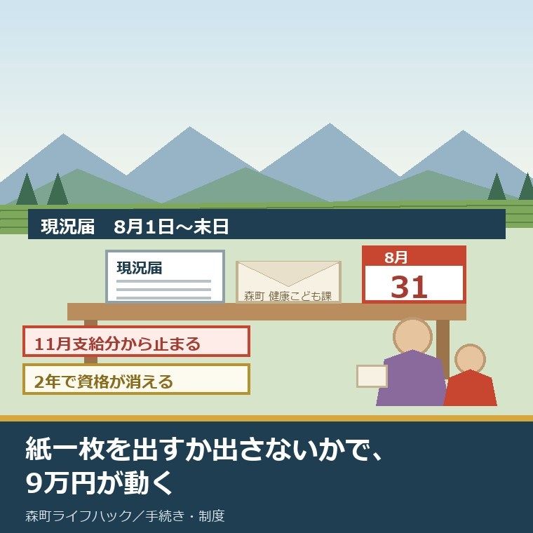
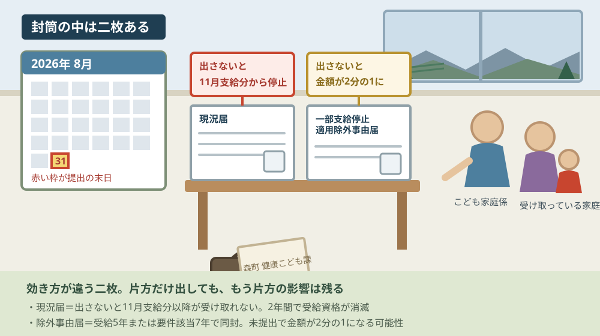
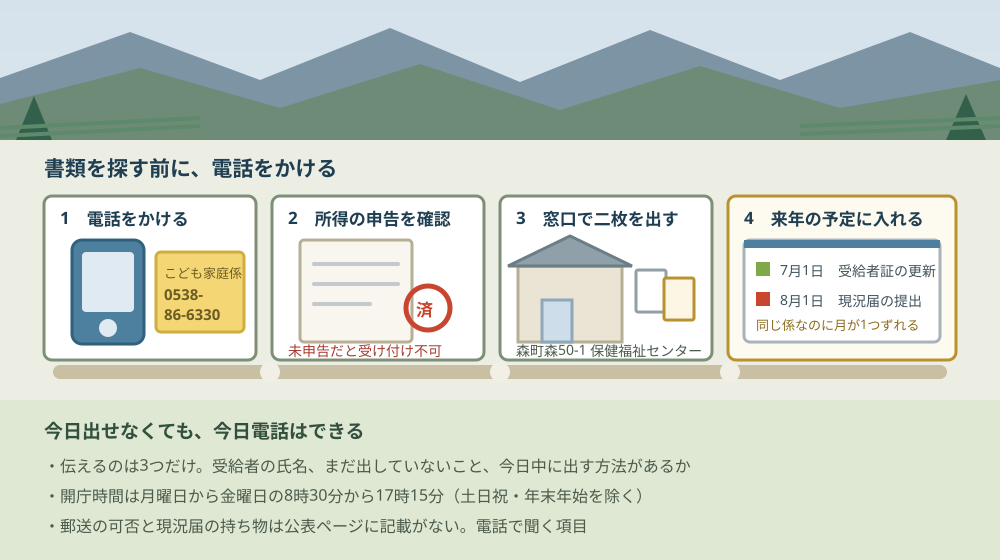

森町の児童扶養手当｜現況届は8月31日が期限

この記事の要点
Q. 森町で児童扶養手当をもらっています。現況届、まだ出していません。間に合いますか。
A. 今日が最終日です。森町の現況届の期限は毎年8月1日から末日までで、2026年は8月31日（月曜日）。出さないと11月支給分以降が受け取れず、2年間出さないと受給資格が消滅します。窓口は健康こども課こども家庭係（森町森50-1・0538-86-6330）です。
静岡県周智郡森町（遠州森町）で児童扶養手当を受け取っている家庭には、毎年8月に一つだけ宿題があります。現況届です。役場から封筒が届き、書いて出す。それだけの手続きですが、出さなかったときの効き方が大きい。
私は磐田市で小さな不動産業を営みながら、森町の空き家・農地・実家じまいのご相談を受けています。今日は2026年8月31日、月曜日です。この日に森町の公表ページで確認できたことだけを並べます。
先に言い切ります。この記事を8月31日に読んでいるなら、書類を揃えてから行こうとすると間に合いません。先に電話をかけて、今日中に何ができるかを聞く。順番はそちらが先です。
森町の公表ページには、出さなかった場合のことが2段階で書かれています。1段目は「11月支給分以降の手当を受け取ることができなくなります」、2段目は「2年間提出されない場合は、受給資格が消滅します」。止まるのと、消えるのは別の話です。
公式情報から確定できること
森町の「児童扶養手当について」（健康こども課こども家庭係、更新日2024年11月1日）を2026年8月31日に確認しました。ここから確定できることを、順に並べます。金額は同ページに「支給額（令和7年4月分から）」として掲載されているものです。
一つ目。現況届の提出期間は、毎年8月1日から末日までです。ページには「期限内(毎年8月1日～末日)に必ずご提出をお願いいたします」と書かれています。2026年の8月の末日は31日、曜日は月曜です。
二つ目。現況届は、前年の所得と8月1日現在の状況を調べる届出です。ページには「受給者の前年の所得や8月1日現在の状況を調査するもので、手当支給の可否や金額を決定する大切な届出」と記されています。単なる生存確認ではなく、来年分の金額を決める書類です。
三つ目。出さないと11月支給分以降が止まります。原文は「この届出を行わないと、11月支給分以降の手当を受け取ることができなくなります」です。8月に出さなかった影響が、9月でも10月でもなく11月に出る。ここが見落とされやすい。
四つ目。2年間出さないと、受給資格そのものが消滅します。原文は「なお、この届けを2年間提出されない場合は、受給資格が消滅しますのでご注意ください」。止まっているだけならさかのぼれる余地がありますが、消滅は別です。
五つ目。所得の申告をしていないと、現況届は受け付けてもらえません。ページには「所得の申告をされていないと現況届を受け付けることができません」と書かれています。申告を済ませてから届出、という順番です。
六つ目。手当の支給は年6回です。「1月・3月・5月・7月・9月・11月の11日（土曜日・日曜日・祝日に重なる場合はその直前の金融機関営業日）」と記載されています。1回の支払で前月分までの2か月分がまとめて支給されます。
七つ目。支給額（令和7年4月分から）は、対象児童1人で全部支給46,690円です。2人で57,720円、3人で68,750円。いずれも月額で、一部支給は所得に応じて10円単位で減額されます。4人目以降の加算額は同ページに記載がありません。
| 対象児童数 | 全部支給（月額） | 一部支給（月額） |
|---|---|---|
| 1人 | 46,690円 | 46,680円〜11,010円 |
| 2人 | 57,720円 | 57,700円〜16,530円 |
| 3人 | 68,750円 | 68,720円〜22,050円 |
八つ目。対象になる「児童」は、18歳に到達した後の最初の3月31日までです。20歳未満で一定の障がいをもつ場合は、そちらまで延びます。高校を出たら終わり、と覚えている方が多いところですが、正確には年度末までです。
九つ目。対象児童の要件は8つの類型で示されています。父母の離婚、父または母の死亡、重度の障がい、生死不明、1年以上の遺棄、1年以上の拘禁、裁判所からのDV保護命令、婚姻によらないで生まれた児童。この8つです。
十番目。所得制限の限度額が表で示されています。扶養親族が0人なら全部支給の限度額が690,000円、一部支給が2,080,000円、扶養義務者は2,360,000円。扶養親族が1人増えるごとに、いずれも380,000円ずつ上がります。
十一番目。養育費は、受け取った総額の8割が所得に加算されます。原文は「養育費を受け取った方は、その総額の8割を所得として加算し、判定します」。養育費を受け取っている家庭は、ここが判定に効きます。
十二番目。公的年金を受け取ると、手当が調整されます。遺族年金・障害年金・老齢年金・労災年金などを受給する場合、手当の全額または一部が受けられません。障害年金の受給者は令和3年3月分（同年5月支払分）から差額支給の扱いです。
十三番目。窓口は健康こども課こども家庭係です。所在地は〒437-0215 静岡県周智郡森町森50-1、電話は0538-86-6330。森町保健福祉センターの住所です。役場本庁（森町森2101-1・0538-85-2111）とは別の建物になります。
十四番目。現況届そのものの持ち物リストは、公表ページに載っていません。載っているのは新規申請のときに必要なもの（認め印、戸籍謄本、個人番号がわかるもの、口座番号がわかるもの、年金手帳など）です。現況届の持ち物は同封の案内を見るか、電話で聞くことになります。
十五番目。郵送で出せるか、時間外に出せるかも、公表ページには記載がありません。ここは2026年8月31日時点で未確認のまま残します。役場の開庁時間は月曜日から金曜日の8時30分から17時15分までと公表されています。
出し忘れが家計にいくら効くのか
制度の説明だけでは動きません。金額に置き換えます。ここから先の計算は、森町が公表している支給額をもとにした当方の概算で、公表されている統計ではありません。
11月支給分は、9月分と10月分の2か月分です。対象児童1人で全部支給を受けている場合、46,690円の2か月分で93,380円。これが11月11日に振り込まれるはずだった金額です。紙1枚を出さなかった結果として、この額が一度に止まります。
2人なら57,720円の2か月分で115,440円、3人なら68,750円の2か月分で137,500円。子どもの人数が多いほど、1回の停止で動く金額が大きくなります。
もう一つ、日割りにしてみます。46,690円を30日で割ると、1日あたり約1,556円です。私は数字を見るとき、必ずこの形に直します。1日1,500円分の暮らしが、封筒を出すか出さないかで動いている、ということになります。
年額にすると、1人目の全部支給で560,280円。私の商売の感覚で言えば、これは築年数の経った戸建てを1年間ふつうに維持できるくらいの規模の金額です。手当の話を「福祉の話」として扱うと軽く見えますが、家計の側から見れば固定収入の一本です。
だから私は、この届出を「書類仕事」だとは思っていません。年に一度、5桁から6桁の金額を守るための、15分の作業です。
もう一枚の紙「一部支給停止適用除外事由届」
現況届の封筒には、人によってもう一枚入っています。「一部支給停止適用除外事由届」です。森町の公表ページには「一部支給停止事由適用除外届は対象者の方へ現況届に同封し送付します」と書かれています。
対象になるのは2種類です。手当の受給開始から5年が経った方と、支給要件に該当してから7年が経った方。どちらか一方に当てはまれば同封されます。
この紙を出さないとどうなるか。原文は「提出されない場合は、手当の金額が2分の1に減額される可能性がありますのでご注意ください」です。止まるのではなく、半分になる。現況届とは別の効き方をします。
半分になった状態が1年続くと、どうなるか。1人目の全部支給46,690円が23,345円になり、差は月23,345円、12か月で280,140円です（当方の計算）。紙2枚のうち1枚を出し忘れただけで、これだけの差が出ます。
除外の事由は5つ示されています。就労している、求職活動や就職活動をしている、身体や精神に障がいがある、けがや病気で就労が難しい、家族の介護で就労が難しい。それぞれに必要な証明書類が決められていて、就労なら自営業従事証明書か雇用証明書または社会保険証の写し、求職活動なら求職活動等申告書か採用選考証明書、障がいなら手帳の写しか診断書、けがや病気なら診断書、介護なら申立書です。

この図で描きたかったのは、2枚の紙が別の結果を持っているということです。現況届は支給そのものを止め、除外事由届は金額を半分にする。どちらか片方だけ出しても、片方の影響は残ります。
もう一つ描いたのは、カレンダーの31日だけが囲まれている場面です。8月1日から末日、という書き方は、初日ではなく末日のほうを見る人が多い期間です。私も同じ性分なので、これは他人事として書けません。
良い点：期限と結果が、同じページに並んで書かれている
森町の公表ページを読んで、評価できる点が4つありました。順に書きます。
一つ目。期限と、出さなかった場合の結果が、同じ画面に並んでいることです。「毎年8月1日～末日」と「11月支給分以降の手当を受け取ることができなくなります」が離れていない。制度のページは期限だけ書いて結果を書かないものが多いので、この並べ方は親切です。
二つ目。2年で受給資格が消滅する、という重い話まで書いていることです。行政の案内は、悪い結果ほど書き方が弱くなりがちです。ここははっきり書いてあります。読んだ人が「今年は出さなくてもいいか」と考えにくい文章になっています。
三つ目。一部支給停止適用除外事由届の証明書類が、事由ごとに具体名で列挙されていることです。自営業従事証明書、雇用証明書、社会保険証の写し、求職活動等申告書、採用選考証明書、手帳の写し、診断書、申立書。何を持って行けばいいかが、電話をかける前に分かります。
四つ目。養育費の8割加算という、当事者にしか関係しないが判定を左右する条件を落としていないことです。これを書いていない自治体のページもあります。養育費を受け取っている家庭にとっては、記載があるかないかで準備が変わります。
注文したい点：出す側の段取りが、まだ書かれていない
ここからは、実際に紙を出す側の立場での注文を4つ書きます。町を批判したいのではなく、調べた側からの報告です。
一つ目。現況届そのものの持ち物リストがありません。ページに載っているのは新規申請の必要書類です。毎年出す側が知りたいのは、今年の8月に何を持って行けばいいかのほうです。同封の案内に書いてあるのだとしても、封筒を失くした人はページから辿れません。
二つ目。郵送で出せるかどうかが書かれていません。ひとり親家庭の多くは就労しています。役場の開庁時間は平日の8時30分から17時15分。この時間に窓口へ行くには、仕事を抜けるか、休むことになります。郵送の可否は、そのまま「半日休むかどうか」の判断につながります。
三つ目。窓口の受付時間が、このページには書かれていません。問い合わせ先は森町森50-1（森町保健福祉センター）ですが、ページ下部に出ている開庁時間は役場本庁（森町森2101-1）のものです。同じ時間である可能性は高いものの、公表として確認できるのは本庁の時間だけでした。
四つ目。同じこども家庭係が扱う「ひとり親家庭等医療費助成」の受給者証の更新は、7月1日からです。森町の公表ページ（更新日2025年3月18日）に「毎年7月1日から、受給者証が新しくなります」と書かれています。手当の現況届は8月、医療費助成の受給者証更新は7月。同じ窓口・同じ家庭に関わる2つの手続きが、1か月ずれています。
この1か月のずれを、私はまだどう受け止めるか決めかねています。制度の根拠法が違うので、時期がずれること自体には理由があります。ただ、受け取る側から見れば、7月に1回・8月にもう1回、同じ係へ紙を出す夏になります。まとめられないのか、まとめないほうが確認は正確なのか、私には判断がつきません。

この図の一番目を電話にしたのには理由があります。足りない書類が何かは、電話で聞いたほうが早いからです。探してから行くと、探し物の途中で日が暮れます。
四番目に来年の予定を置いたのも意図があります。7月1日と8月1日を2件セットで入れておけば、翌年は封筒が届く前に思い出せます。今日3分でできて、来年以降ずっと効く作業はここだけです。
対案・結論：今日、ご家族が確かめられること
ここからは、今日できることを順番で書きます。8月31日に読んでいる方と、9月以降に読んでいる方で、動き方が変わります。
今日が8月31日なら、最初にやるのは電話です。健康こども課こども家庭係（0538-86-6330）に、開庁時間内（月曜日から金曜日の8時30分から17時15分）にかける。伝えることは3つだけです。受給者の氏名、現況届をまだ出していないこと、今日中に出す方法があるかどうか。
書類を探してから電話する、という順番は捨ててください。足りない書類が何かは、電話で聞いたほうが早い。所得の申告が済んでいない場合は、そちらが先になるという答えが返ってくる可能性もあります。
封筒が見つからない場合も、電話でかまいません。現況届の用紙は町から送られてくるものですが、失くしたときの扱いは公表ページに記載がありません。これは窓口に聞く項目です。
9月以降にこの記事を読んだ方へ。期限を過ぎていても、窓口へ連絡してください。公表ページには「11月支給分以降の手当を受け取ることができなくなります」とありますが、その後に提出した場合の扱いまでは書かれていません。2年で資格が消滅する、という記述の裏返しとして、2年以内であれば資格自体は残っていることになります。
そして、来年の8月のために今日できることが一つあります。手元のカレンダーかスマートフォンの予定表に、「8月1日・児童扶養手当の現況届」と「7月1日・ひとり親家庭等医療費助成の受給者証更新」の2件を、繰り返しの予定として入れておく。これは今日3分でできて、来年以降ずっと効きます。
森町の相談窓口は、予約が要るものと要らないものがあります。動く前の見当をつけるには、森町の相談窓口を予約の要否で分けた記事が使えます。児童扶養手当と医療費助成を通しで整理したページは、ひとり親家庭の児童扶養手当・医療費助成のまとめにあります。
家族に残す記録
私が不動産の相談で毎回お願いしているのが、記録を1枚にまとめることです。児童扶養手当も同じで、書き写しておくと来年の8月が軽くなります。
紙でもスマートフォンのメモでもかまいません。置き場所を1か所に決めることのほうが、形式より効きます。
- 受給者証の番号と、対象児童の氏名・生年月日（18歳到達後の最初の3月31日がいつかも書いておく）
- 現況届を出した日と、提出した窓口・受け取った人の部署名
- 一部支給停止適用除外事由届が同封されていたかどうか。同封されていた場合は、どの事由でどの証明書類を出したか
- 受給開始年月と、支給要件に該当した年月（5年・7年の起算点になる）
- 養育費を受け取っている場合は、その年の総額（8割が所得に加算される）
- 振込先の金融機関・口座番号と、変更したときの届出日
- ひとり親家庭等医療費助成の受給者証の更新月（7月1日から新しくなる）
- 健康こども課こども家庭係 0538-86-6330（森町森50-1）
大石の視点
ここからは私の意見です。公表されている事実とは分けて読んでください。この記事には、私が実際に立ち会った場面としての一人称の話は入れていません。森町のひとり親家庭の相談を私が直接受けた記録がないためで、以下は資料を読んだ上での見方です。
私がこの制度で一番よくできていると思うのは、8月に全員を一度立ち止まらせる設計です。所得は毎年変わり、子どもの年齢も上がり、同居の家族も変わる。年に一度、全員が同じ月に状況を申告する形にしておけば、変化の取りこぼしが減ります。仕組みとしては合理的です。
その上で、注文したいのは「8月」という月そのものです。8月は学校が休みで、子どもが家にいる月です。就労しているひとり親が、平日の日中に役場へ行く余裕がいちばん少ない月でもある。制度の設計上は前年所得が確定した後という理由があるのでしょうが、動く側の負担が最も重い月に置かれていることは事実です。
不動産の目で言えば、これは相続の手続きとよく似ています。期限のある手続きは、期限そのものより「その期限が誰にとって動きやすい時期か」で成否が決まります。相続放棄の3か月も、四十九日と重なるから間に合わない人が出る。制度が悪いのではなく、生活の側と重なっているだけです。
だから私は、こう案内します。今日出せなくても、今日電話はできる。電話をかけた事実が残っていれば、次の一手を窓口と一緒に決められます。手当のことで生活費が回らなくなりそうなときは生活費が足りないときの相談窓口、町税や国民健康保険税の支払いが重なっているなら税金が払えないときの納税相談が別にあります。児童扶養手当とは別建ての児童手当も、対象と期限が違う制度です。
まとめ
この記事で確認した事実を、最後に並べ直します。すべて2026年8月31日時点で公表されている内容です。
- 森町の児童扶養手当の現況届の提出期間は「毎年8月1日～末日」。2026年の末日は8月31日（月曜日）
- 現況届は、受給者の前年の所得と8月1日現在の状況を調査し、手当の支給の可否と金額を決定する届出
- 提出しないと「11月支給分以降の手当を受け取ることができなくなります」と公表されている
- 「この届けを2年間提出されない場合は、受給資格が消滅します」とも記載されている
- 所得の申告をしていないと、現況届は受け付けられない
- 受給開始から5年、または支給要件該当から7年が経った人には「一部支給停止適用除外事由届」が現況届に同封される。提出しないと「手当の金額が2分の1に減額される可能性があります」
- 除外事由は、就労／求職・就職活動／身体・精神の障がい／けが・病気で就労困難／家族の介護で就労困難の5つ。それぞれ証明書類が指定されている
- 支給額（令和7年4月分から）は対象児童1人で全部支給46,690円、2人57,720円、3人68,750円。一部支給は所得により10円単位で減額
- 支給は1月・3月・5月・7月・9月・11月の11日、年6回。1回で2か月分がまとめて支給される
- 対象児童は18歳到達後の最初の3月31日まで（20歳未満で一定の障がいがある場合はそちらまで）
- 所得制限は扶養親族0人で全部支給690,000円・一部支給2,080,000円・扶養義務者2,360,000円。扶養親族が1人増えるごとに380,000円ずつ上がる
- 養育費は受け取った総額の8割が所得に加算されて判定される
- 窓口は健康こども課こども家庭係（〒437-0215 静岡県周智郡森町森50-1・0538-86-6330）
- 同じ係が扱うひとり親家庭等医療費助成の受給者証は「毎年7月1日から、受給者証が新しくなります」（更新日2025年3月18日）。手当の現況届の8月とは1か月ずれている
- 11月支給分の停止は、対象児童1人・全部支給で93,380円、2人で115,440円、3人で137,500円にあたる（当方の計算）
- 2分の1減額が1年続いた場合の差は、対象児童1人・全部支給で280,140円（当方の計算）
- 現況届の持ち物リスト、郵送の可否、時間外提出の可否、健康こども課（森町森50-1）の窓口受付時間、森町の受給者数は、いずれも公表を確認できなかった
よくある質問
Q1. 森町の児童扶養手当の現況届は、いつまでに出せばいいですか。
A1. 森町の公表ページには「期限内(毎年8月1日～末日)に必ずご提出をお願いいたします」と書かれています。2026年の末日は8月31日の月曜日です。現況届は受給者の前年の所得と8月1日現在の状況を調べ、手当の支給の可否と金額を決める届出です。所得の申告をしていないと受け付けてもらえません。窓口は健康こども課こども家庭係（森町森50-1・0538-86-6330）です。
Q2. 現況届を出し忘れると、どうなりますか。
A2. 森町の公表ページには「この届出を行わないと、11月支給分以降の手当を受け取ることができなくなります」と記載されています。あわせて「この届けを2年間提出されない場合は、受給資格が消滅します」とも書かれています。11月支給分は9月分と10月分の2か月分にあたるため、1人目の全部支給46,690円で計算すると93,380円が一度に止まる形になります（当方の計算）。
Q3. 現況届と一緒に届いた「一部支給停止適用除外事由届」は何ですか。
A3. 受給開始から5年、または支給要件に該当してから7年が経った方に、現況届へ同封して送られる届出です。就労している、求職活動をしている、障がいがある、けがや病気で就労が難しい、家族の介護で就労が難しい、のいずれかを証明書類とともに申し出るものです。森町の公表ページには、提出しないと「手当の金額が2分の1に減額される可能性があります」と書かれています。
最後に一つだけ。ここに書いた期限、金額、支給月、所得制限の限度額、窓口の電話番号、更新日は、いずれも森町の公表ページを2026年8月31日に確認して書き写したものです。93,380円・115,440円・137,500円・280,140円・1日あたり約1,556円・年額560,280円という数字は、公表されている支給額をもとにした当方の概算であり、公表されている統計ではありません。現況届の持ち物、郵送の可否、時間外提出の可否、健康こども課（森町森50-1）の窓口受付時間は確認できていません。制度と金額は改定されることがあります。動く前に、必ず健康こども課こども家庭係へ電話でご確認ください。
参考にした公式情報
- 児童扶養手当について／静岡県森町（「更新日：2024年11月01日」と表示されていること、「期限内(毎年8月1日～末日)に必ずご提出をお願いいたします」「受給者の前年の所得や8月1日現在の状況を調査するもので、手当支給の可否や金額を決定する大切な届出」「この届出を行わないと、11月支給分以降の手当を受け取ることができなくなります。」「なお、この届けを2年間提出されない場合は、受給資格が消滅しますのでご注意ください。」「所得の申告をされていないと現況届を受け付けることができません」「一部支給停止事由適用除外届は対象者の方へ現況届に同封し送付します」「提出されない場合は、手当の金額が2分の1に減額される可能性がありますのでご注意ください。」「養育費を受け取った方は、その総額の8割を所得として加算し、判定します。」と記載されていること、支給額（令和7年4月分から）が対象児童1人で全部支給46,690円・一部支給46,680円から11,010円、2人で57,720円・57,700円から16,530円、3人で68,750円・68,720円から22,050円であること、支給が1月・3月・5月・7月・9月・11月の11日で1回に2か月分がまとめて支給されること、対象児童が18歳到達後最初の3月31日まで（20歳未満で一定の障がいがある場合を含む）であること、所得制限限度額が扶養親族0人で全部支給690,000円・一部支給2,080,000円・扶養義務者2,360,000円であること、一部支給停止適用除外の対象が受給開始から5年経過または支給要件該当から7年経過であること、除外事由が就労・求職活動等・身体または精神の障がい・けがや病気による就労困難・家族の介護による就労困難の5つでそれぞれ証明書類が指定されていること、問い合わせ先が健康こども課こども家庭係（〒437-0215 静岡県周智郡森町森50-1・電話0538-86-6330）であることを2026年8月31日に確認）
- ひとり親家庭等医療費助成事業について／静岡県森町（「更新日：2025年03月18日」と表示されていること、「毎年7月1日から、受給者証が新しくなります。」「※更新のお手続きがされないと、資格があっても新しい受給者証は送付されませんのでご注意ください。」と記載されていること、支給内容が医療保険を利用して医療を受けた場合の自己負担分であること、「ただし、所得税が課せられている世帯は対象になりません。」と記載されていること、「お子さんの20歳の誕生日の前日が属する月の月末までが助成対象です。」と記載されていること、問い合わせ先が健康こども課こども家庭係（森町森50-1・0538-86-6330）であることを2026年8月31日に確認）
- こども家庭係／静岡県森町（健康こども課こども家庭係が児童扶養手当とひとり親家庭等医療費助成の双方を所管する窓口として案内されていることを2026年8月31日に確認）
- 手当・助成／静岡県森町（児童扶養手当・ひとり親家庭等医療費助成・ひとり親家庭放課後児童クラブ利用支援事業などが同じ一覧に並んでいることを2026年8月31日に確認）

最終確認日：2026-08-31 ／ 本記事は公表情報と執筆者の見解を分けて記載しています。93,380円・115,440円・137,500円・280,140円・1日あたり約1,556円・年額560,280円という数字は、いずれも森町が公表している支給額をもとにした執筆者の概算であり、公表されている統計ではありません。現況届の持ち物、郵送の可否、時間外提出の可否、健康こども課（森町森50-1）の窓口受付時間、森町内の受給者数は、2026年8月31日時点で確認できていません。森町の「児童扶養手当について」は更新日が2024年11月1日であり、掲載されている金額は「令和7年4月分から」の額です。制度・金額・期限は改定されることがあります。動く前に、必ず健康こども課こども家庭係（0538-86-6330）へ電話でご確認ください。